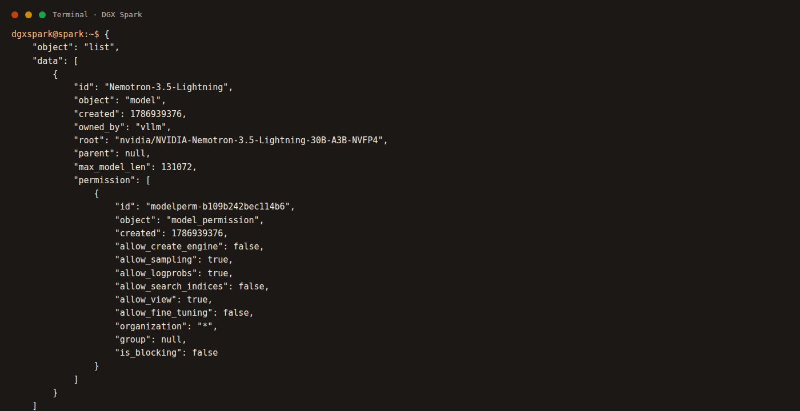
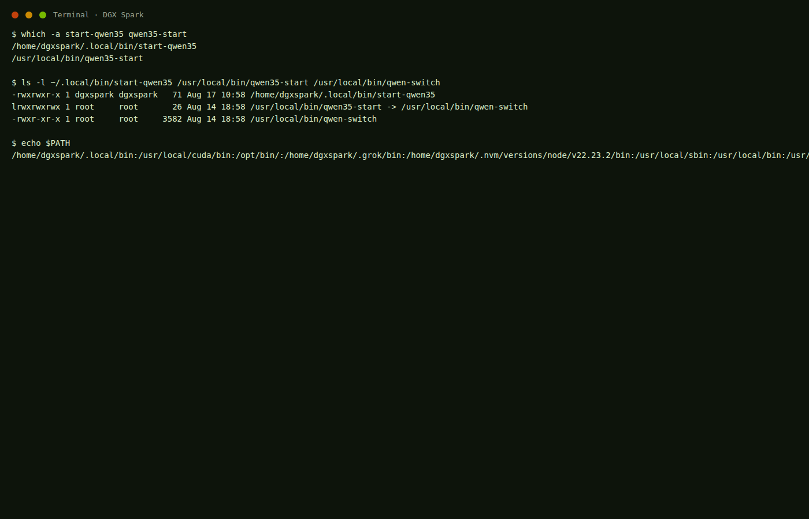
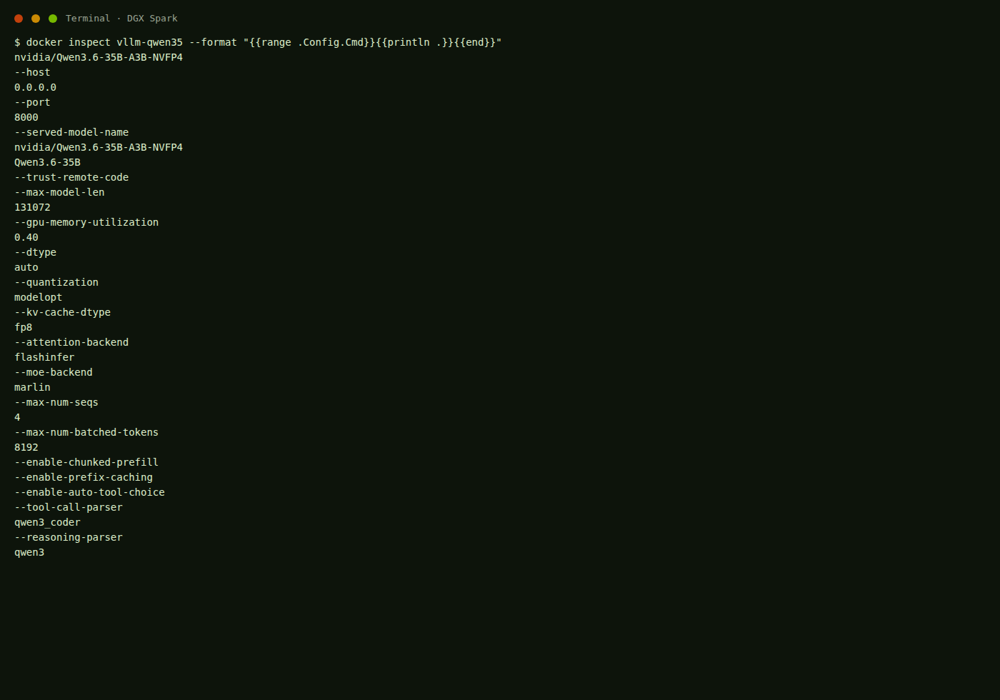
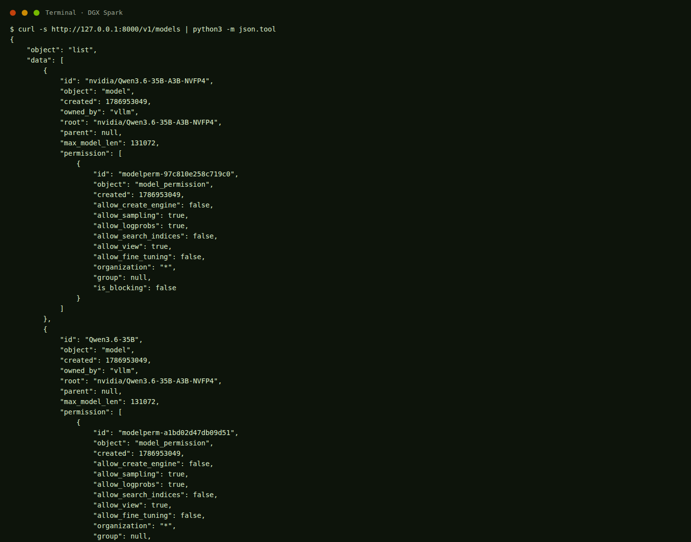
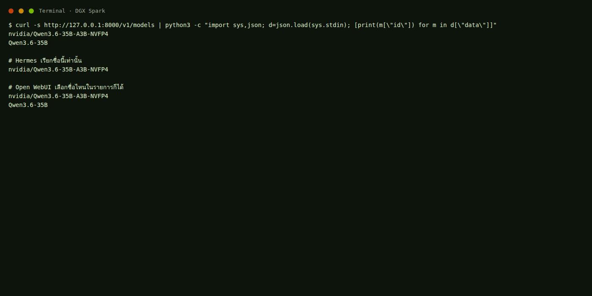
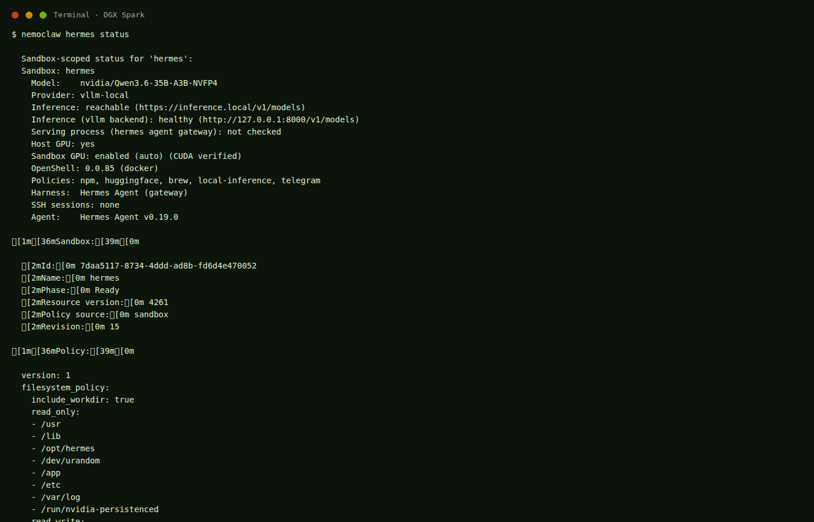

สองคำสั่ง
start-qwen35 กับ qwen35-start คนละไฟล์ คนละกล่อง
หมวดนี้เป็นหน้าที่ของ vLLM ไม่ใช่หน้าเว็บแชท เปิดได้ทีละตัว คำสั่งจะปิดตัวเก่าให้อัตโนมัติ
ไฟล์อยู่ที่ ~/.cache/huggingface/hub โหลดครบแล้ว ไม่ต้องดาวน์โหลดซ้ำตอนสตาร์ท
| ชื่อบนหน้าเว็บ | ไฟล์จริง | ขนาด | เหมาะกับ | คำสั่ง |
|---|---|---|---|---|
| Nemotron-3.5-Lightning | nvidia/NVIDIA-Nemotron-3.5-Lightning-30B-A3B-NVFP4 | 21 GB + DSpark 1.3 GB | แชท เขียนโค้ด งานเอเจนต์ บริบทยาว | start-nemotron |
| Qwen3.6-27B | nvidia/Qwen3.6-27B-NVFP4 | 21 GB | แชททั่วไป สูตรนี้เปิดแบบข้อความอย่างเดียว | start-qwen27 |
| nvidia/Qwen3.6-35B-A3B-NVFP4 และ Qwen3.6-35B | nvidia/Qwen3.6-35B-A3B-NVFP4 | 22 GB ไฟล์ · จอง RAM ประมาณ 40% | งานหนักขึ้น แบบ MoE ใช้กับ Hermes ได้ | start-qwen35 |

พิมพ์ในเทอร์มินัลบนเครื่อง DGX ไม่ต้อง cd ก่อน
| คำสั่ง | ผลลัพธ์ | ใช้เวลานานไหม |
|---|---|---|
llm-status | บอกว่าเว็บกับโมเดลเปิดอยู่หรือไม่ | ทันที |
start-nemotron | ปิดโมเดลอื่น แล้วเปิด Nemotron | 2–4 นาที |
start-qwen27 | ปิดโมเดลอื่น แล้วเปิด Qwen 27B | 2–4 นาที |
start-qwen35 | ปิดโมเดลอื่น แล้วเปิด Qwen 35B ชื่อเต็มที่ Hermes ใช้ จอง RAM 40% | 2–6 นาที |
stop-model | ปิดโมเดล คืน RAM ประมาณ 100 GB | ไม่กี่วินาที |
start-webui | เปิดหน้าเว็บ :18473 | ไม่กี่วินาที |
stop-webui | ปิดหน้าเว็บ ประวัติแชทยังอยู่ | ทันที |
ทำเมื่อไม่ได้คุยแล้ว และอยากให้เครื่องโล่ง
stop-model
llm-status
ต้องเห็น Model: stopped
free -h
คอลัมน์ available ควรเพิ่มขึ้นมากหลังปิดโมเดล

start-nemotron
ถ้ามี Qwen เปิดอยู่ จะถูกปิดในขั้นนี้
อย่าปิดเทอร์มินัล อย่ากด Ctrl+C
ใช้เวลาประมาณ 2–4 นาที
กด F5 หรือ Ctrl + R
start-qwen27
ถ้ายังเห็นชื่อเก่า ให้รอ 10 วินาทีแล้วรีเฟรชอีกครั้ง
หมวดนี้ยาวเพราะเรื่องนี้มี สามเรื่องซ้อนกัน ถ้าอ่านแค่บรรทัดเดียวจะเข้าใจผิด ต้องไล่ทีละชั้น
อาการที่เจอจริงมีสองอย่างพร้อมกัน
start-qwen35 แล้ว Hermes ส่งข้อความไม่ได้ / ขึ้นว่าโมเดลไม่มี (HTTP 404)start-qwen35 แล้ว RAM ดูสูงผิดปกติ เมื่อเทียบกับตอนรัน qwen35-startstart-qwen35 กับ qwen35-start คนละไฟล์ คนละกล่อง
Hermes ยิงชื่อเต็ม ถ้า API ประกาศแค่ชื่อสั้น จะได้ 404
สูตรเก่ากัน 82% สูตรใหม่กัน 40% ไฟล์โมเดลไม่ได้โต
อ่านต่อตามหัวข้อซ้ายมือ ห้ามข้าม สองคำสั่ง → Linux หาคำสั่งยังไง → ข้างในคำสั่ง → ชื่อสามชั้น → RAM → สิ่งที่แก้แล้ว แล้วค่อยไป เปิดโมเดล
บนเครื่องนี้มีคำสั่งสองตัวที่คนพิมพ์สลับกันบ่อย เพราะมีคำว่า qwen35 เหมือนกัน แต่ขึ้นต้นคนละแบบ และไปเปิดคนละคอนเทนเนอร์
ขึ้นต้นด้วย start- · เปิดกล่อง vllm-qwen35 · สูตรสตูดิโอ
ลงท้ายด้วย -start · เปิดกล่อง nemoclaw-vllm · สูตรเก่า
| รายการ | start-qwen35 | qwen35-start |
|---|---|---|
| ชื่อเต็มที่ต้องพิมพ์ | start-qwen35 ขึ้นต้นด้วย start- | qwen35-start ลงท้ายด้วย -start |
| ไฟล์จริง | /home/dgxspark/.local/bin/start-qwen35 | /usr/local/bin/qwen35-start |
| ชนิดไฟล์ | สคริปต์สั้น 71 ไบต์ สร้าง 17 ส.ค. 2026 | ลิงก์ไป /usr/local/bin/qwen-switch สร้าง 14 ส.ค. 2026 |
| ข้างในเรียกอะไร | ~/ai/open-webui/llm start qwen35 | docker start nemoclaw-vllm |
| เปิดคอนเทนเนอร์ชื่อ | vllm-qwen35 | nemoclaw-vllm |
| ใครสร้างสูตรนี้ | สูตรสตูดิโอใน ~/ai/open-webui/docker-compose.yml | สูตรเดิมของ NemoClaw ที่ลงมากับเครื่อง |
| ฟังพอร์ต | 8000 | 8000 |
| เปิดพร้อมกันได้ไหม | ไม่ได้ ทั้งคู่แย่งพอร์ต 8000 ตัวหลังจะชนหรือทับตัวแรก | |
| ปิดตัวอื่นให้ไหม | ปิดทั้งตระกูล vLLM รวม nemoclaw-vllm และ qwen36-27b | ปิดแค่ qwen36-27b ไม่ปิด vllm-qwen35 |
ตรวจด้วยตาบนเครื่องนี้ได้เลย คัดลอกแล้วกด Enter
which -a start-qwen35 qwen35-start ls -l ~/.local/bin/start-qwen35 /usr/local/bin/qwen35-start /usr/local/bin/qwen-switch

start-qwen35 อยู่ที่ ~/.local/bin ส่วน qwen35-start เป็นลิงก์ไป qwen-switchstart- เสมอ (start-nemotron start-qwen27 start-qwen35) คำสั่งที่ลงท้าย -start คือสูตรเก่าของเครื่อง อย่าใช้คู่กันเมื่อพิมพ์ชื่อคำสั่งแล้วกด Enter เชลล์ไม่ได้เดา มันเดินหาไฟล์ตามตัวแปร PATH จากซ้ายไปขวา เจอชื่อตรงกันตัวแรกแล้วหยุด
บนเครื่องนี้ PATH ขึ้นต้นด้วย /home/dgxspark/.local/bin แล้วค่อยถึง /usr/local/bin
echo $PATH
ดังนั้น
start-qwen35 → เจอที่ ~/.local/bin ก่อน → เปิดสูตรสตูดิโอqwen35-start → ไม่มีไฟล์ชื่อนี้ใน ~/.local/bin → ไปเจอที่ /usr/local/bin → เปิดสูตรเก่าสองชื่อนี้ไม่ทับกันใน PATH เพราะสะกดไม่เหมือนกัน ทั้งคู่จึงเรียกได้ตลอด ใครพิมพ์ชื่อไหนก็ได้ตัวนั้นจริง ๆ
กด Ctrl + Alt + T
เชลล์จะเติมเป็น qwen35-start เพราะไฟล์นั้นขึ้นต้นด้วย qwen35
พิมพ์ start-q แล้วค่อยกด Tab จะได้ start-qwen27 หรือ start-qwen35
ต้องเป็น start-qwen35 ทั้งคำ ห้ามเหลือแค่ qwen35-start
start-qwen35 แล้วตามด้วย qwen35-start ในอีกแท็บ คำสั่งหลังจะพยายามเปิด nemoclaw-vllm ทับพอร์ต 8000 ของตัวที่เพิ่งเปิดอย่าคิดว่าสองคำสั่ง “เปิดโมเดลเดียวกันคนละทาง” มันเปิดคนละคอนเทนเนอร์ และปิดตัวอื่นไม่เหมือนกัน
ไฟล์ ~/.local/bin/start-qwen35 มีแค่บรรทัดเดียว คือไปเรียกสคริปต์กลาง
cat ~/.local/bin/start-qwen35
ผลที่ต้องเห็น
จากนั้นสคริปต์ ~/ai/open-webui/llm ทำตามนี้เป๊ะ
แล้วปิดทุกตัวในรายการ vllm-nemotron vllm-qwen27 vllm-qwen35 nemotron-vllm nemoclaw-vllm qwen36-27b
หน้าเว็บอยู่ที่พอร์ต 18473 ไม่กินพอร์ต 8000
ใช้โปรไฟล์ qwen35 ในไฟล์ ~/ai/open-webui/docker-compose.yml
ทุก 15 วินาทีจะพิมพ์ still loading... รอบแรกหลังคอมไพล์เคอร์เนลอาจนาน 5–6 นาที อย่ากด Ctrl+C
สูตรปัจจุบันต้องขึ้นทั้ง nvidia/Qwen3.6-35B-A3B-NVFP4 และ Qwen3.6-35B
ไฟล์นี้เป็นลิงก์ไป /usr/local/bin/qwen-switch สคริปต์นั้นดูชื่อที่ถูกเรียก ถ้าชื่อเป็น qwen35-start จะทำแบบนี้
ถ้าไม่มี จะพิมพ์ ไม่พบ container แล้วจบ ไม่ได้ไปสร้างจาก compose ของสตูดิโอ
มัน ไม่ปิด vllm-qwen35 หรือ vllm-nemotron นี่คือเหตุที่เคยชนพอร์ต 8000
แค่ปลุกคอนเทนเนอร์เก่าที่เคยสร้างไว้ตอนลง NemoClaw ไม่ได้อ่านสูตรใหม่ใน docker-compose.yml
start-qwen35 จน Ready แล้วไปรัน qwen35-start ทับ สูตรเก่าจะพยายามปลุก nemoclaw-vllm ทั้งที่พอร์ต 8000 ถูกจองแล้ว อย่าทำจุดนี้คือเหตุที่ Hermes พังทั้งที่โมเดลโหลดอยู่แล้ว ต้องแยกสามชั้นให้ขาด
~/.cache/huggingface/hub/models--nvidia--Qwen3.6-35B-A3B-NVFP4 ประมาณ 22 GB คนไม่ได้อ่านโฟลเดอร์นี้ตรง ๆ
http://127.0.0.1:8000/v1/models ช่อง id ใน JSON คือชื่อที่เรียกได้จริง
nvidia/Qwen3.6-35B-A3B-NVFP4 อย่างเดียว Open WebUI เลือกชื่อไหนในรายการก็ได้
ทั้ง start-qwen35 และ qwen35-start อ่านน้ำหนักก้อนเดียวกัน ไม่ได้โหลดโมเดลคนละเวอร์ชัน
ls ~/.cache/huggingface/hub | grep Qwen3.6-35B
ต้องเห็นโฟลเดอร์ models--nvidia--Qwen3.6-35B-A3B-NVFP4
ใน ~/ai/open-webui/docker-compose.yml บริการ qwen35 ตอนนี้มีสองชื่อ
บรรทัดแรกหลัง --served-model-name คือชื่อหลัก บรรทัดถัดไปที่ไม่ขึ้นต้นด้วย -- คือชื่อสำรอง ไฟล์โมเดลยังก้อนเดียว แต่ API ยอมรับทั้งสองชื่อ
ตรวจของจริงจากคอนเทนเนอร์ที่กำลังรัน
docker inspect vllm-qwen35 --format '{{range .Config.Cmd}}{{println .}}{{end}}'
--served-model-name ตามด้วยชื่อเต็มแล้วชื่อสั้น และ --gpu-memory-utilization เป็น 0.40ดูจากคำสั่งจริงบนเครื่องนี้
nemoclaw hermes status
บรรทัดที่ต้องอ่าน
Model: nvidia/Qwen3.6-35B-A3B-NVFP4 = ชื่อที่ Hermes จะใส่ในคำขอทุกครั้งProvider: vllm-local = ไม่โหลดโมเดลในกรงเองInference (vllm backend): healthy (http://127.0.0.1:8000/v1/models) = โฮสต์พอร์ต 8000 ตอบและมีชื่อที่ตรงOpen WebUI คนละแบบ มันถาม /v1/models แล้วโชว์ทุก id ให้เลือก ดังนั้นชื่อสั้นอย่างเดียวก็คุยได้
สูตรเก่าของ start-qwen35 ประกาศแค่ Qwen3.6-35B
nvidia/Qwen3.6-35B-A3B-NVFP4 → vLLM หา id นี้ไม่เจอ → ตอบ HTTP 404 ว่าโมเดลไม่มีทดลองอาการนี้บนเครื่องได้โดยยิงชื่อที่ไม่มีจริง โมเดลที่โหลดอยู่จะไม่ถูกปิด
curl -s http://127.0.0.1:8000/v1/chat/completions \
-H "Content-Type: application/json" \
-d '{"model":"Qwen3.6-35B-WRONG","messages":[{"role":"user","content":"hi"}]}'
The model Qwen3.6-35B-WRONG does not exist รหัส 404 นี่คืออาการเดียวกับที่ Hermes เคยเจอเมื่อชื่อไม่ตรงสูตร qwen35-start ประกาศชื่อเต็มพอดี Hermes จึงใช้ได้ เลยดูเหมือน “คำสั่งนั้นถูกกว่า” ทั้งที่จริง ๆ แล้วเป็นคนละคอนเทนเนอร์ที่บังเอิญตั้งชื่อถูก

root ของทั้งคู่คือ nvidia/Qwen3.6-35B-A3B-NVFP4

DGX Spark ชิป GB10 ใช้หน่วยความจำก้อนเดียวทั้งระบบและ GPU รวมประมาณ 121 GiB ไม่มีแรมการ์ดแยก ตัวเลขใน free -h จึงรวมของโมเดลด้วย
น้ำหนักบนดิสก์ยังประมาณ 22 GB เท่าเดิม ทั้งตอน RAM ดู 100 GB และตอนดู 60 GB ดังนั้นปัญหาไม่ได้อยู่ที่ “โหลดโมเดลคนละไฟล์”
ค่า --gpu-memory-utilization บอก vLLM ว่าให้กันสัดส่วนเท่าไรของหน่วยความจำที่มองเห็น ไว้ให้น้ำหนักโมเดลบวก KV cache
| สูตร | utilization | กันไว้ประมาณ | ผลที่ตาเห็น |
|---|---|---|---|
start-qwen35 แบบเก่า | 0.82 | ~99–100 GiB จาก 121 | available เหลือไม่กี่ GB เครื่องแน่น |
qwen35-start | 0.40 | ~48 GiB | เหลือ RAM ใช้เบราว์เซอร์และโปรแกรมอื่น |
start-qwen35 ตอนนี้ | 0.40 | ~48 GiB | เท่าสูตรที่ Hermes ใช้ได้ |
ส่วนที่กันเกิน 22 GB คือ KV cache ที่เตรียมไว้ให้บทสนทนายาว อ่านต่อที่ KV cache ไม่ได้แปลว่าโมเดลกิน 100 GB ทั้งก้อนตลอดเวลา
free -h
free คือที่ว่างเปล่าจริง ๆ ส่วนที่ระบบเก็บแคชไฟล์จะโชว์ใน buff/cache และยังคืนให้โปรแกรมได้ คอลัมน์ที่บอกว่า “ยังเปิดอย่างอื่นได้อีกไหม” คือ available
วันที่ 17 สิงหาคม 2026 เครื่องนี้ใช้ไป 61 GiB เหลือ available 59 GiB มีแคชอีกประมาณ 30 GiB

vllm-qwen35 เปิดอยู่: used 61Gi available 59Gi ถ้า available เหลือไม่กี่ GB ทั้งที่เปิดแค่ Qwen 35B ให้สงสัยว่ายังใช้สูตร 0.82เลข 61 GiB ไม่ได้แปลว่าโมเดลกินคนเดียว ในนั้นมี Open WebUI, ComfyUI, กรง Hermes, ระบบ และแคชด้วย ส่วนที่ vLLM กันไว้ตามสูตร 40% ประมาณ 48 GiB
stop-model อย่าไปปิดแท็บเบราว์เซอร์อย่างเดียว แท็บไม่ใช่ตัวที่จอง 48–100 GBวันที่ 17 สิงหาคม 2026 ปรับสูตร start-qwen35 ให้ทำงานแบบที่ Hermes ต้องการ โดยไม่ต้องไปพึ่ง qwen35-start
| จุด | ก่อนแก้ | หลังแก้ |
|---|---|---|
| ชื่อที่เสิร์ฟ | แค่ Qwen3.6-35B | ทั้ง nvidia/Qwen3.6-35B-A3B-NVFP4 และ Qwen3.6-35B |
| จอง RAM | 0.82 ≈ 100 GB | 0.40 ≈ 48 GB |
| ปิดสูตรเก่า | ไม่ปิด nemoclaw-vllm | ปิดทั้ง nemoclaw-vllm และ qwen36-27b |
| รอ Ready | บางรอบสั้นเกิน รอบคอมไพล์เลยดูเหมือนค้าง | รอได้ถึง 720 วินาที |
| Hermes | 404 ชื่อไม่ตรง | Inference healthy |
สถานะจริงตอนเขียนหมวดนี้
vllm-qwen35 Upnvidia/Qwen3.6-35B-A3B-NVFP4 และ Qwen3.6-35Bnemoclaw-vllm ไม่ได้รันอยู่
Model container: vllm-qwen35 และ API มีสองชื่อ พอร์ต 8000 ถูกจองโดยตัวเดียว
start-qwen35 อันเดียว ทั้ง Open WebUI และ Hermes ใช้คอนเทนเนอร์เดียวกันได้ ไม่ต้องสลับไป qwen35-startทำตามลำดับนี้บนเครื่อง DGX ใช้ start-qwen35 อันเดียว อย่าพิมพ์ qwen35-start คู่กัน ถ้ายังไม่ได้อ่าน เรื่องที่เกิดจริง ให้อ่านก่อน
กด Ctrl + Alt + T ต้องเป็นเทอร์มินัลบนตัวเครื่องหรือ SSH เข้าเครื่องนี้ ไม่ใช่เทอร์มินัลในกรง Hermes
llm-status
docker ps --format 'table {{.Names}}\t{{.Status}}\t{{.Ports}}'จำไว้ว่าเห็นอะไร ถ้าเห็น nemoclaw-vllm vllm-nemotron หรือ vllm-qwen27 ไม่ต้องปิดมือเอง ข้อถัดไปปิดให้
which start-qwen35
ต้องได้ /home/dgxspark/.local/bin/start-qwen35 ถ้าได้ path อื่น หยุดแล้วอ่าน Linux หาคำสั่งยังไง
start-qwen35
ต้องขึ้นต้นด้วย start- อย่าใช้ qwen35-start อย่าเปิดแท็บที่สองไปรันคำสั่งสลับโมเดลอีกตัว
ถ้ามีสูตรเก่าเปิดอยู่ จะถูกปิดในขั้นนี้ เพื่อไม่ให้แย่งพอร์ต 8000 รอจนผ่านบรรทัดนี้ก่อน
ตอนนี้ vLLM กำลังโหลดน้ำหนัก คอมไพล์เคอร์เนล และกันพื้นที่ KV cache
รอบแรกหลังรีบูตหรือหลังอัปเดตอิมเมจอาจนาน 5–6 นาที ทุก 15 วินาทีจะขึ้น still loading... นั่นปกติ เพดานรอคือ 720 วินาที
ต้องมีบรรทัด model: nvidia/Qwen3.6-35B-A3B-NVFP4 ถ้ามีแค่ Qwen3.6-35B ให้หยุด แล้วยิง docker logs --tail 80 vllm-qwen35 แล้วย้อนไปดูว่าแก้สูตรใน compose หลุดหรือยัง
อย่าไปรัน start-nemotron หรือ qwen35-start ทับ เปิดโมเดลใหญ่ได้ทีละตัว

docker logs --tail 80 vllm-qwen35 ถ้ายังโหลดอยู่ให้รอต่อ แล้วค่อยรัน llm-status อีกครั้งทำครบทั้ง 8 ข้อ อย่าข้าม ถ้าข้อไหนไม่ผ่าน อย่าเพิ่งไปคุยใน Hermes แล้วสรุปว่าเอเจนต์พัง
llm-status
ต้องได้ Model container: vllm-qwen35 (running) และ API model: มีทั้งชื่อเต็มกับชื่อสั้น
curl -s http://127.0.0.1:8000/v1/models | python3 -m json.tool
ใน JSON ต้องมี "id": "nvidia/Qwen3.6-35B-A3B-NVFP4" ถ้ามีแค่ชื่อสั้น Hermes จะ 404
docker ps --format 'table {{.Names}}\t{{.Status}}\t{{.Ports}}'ต้องเห็น vllm-qwen35 สถานะ Up ผูก 0.0.0.0:8000->8000/tcp และต้องไม่เห็น nemoclaw-vllm พร้อมกัน
docker inspect vllm-qwen35 --format '{{range .Config.Cmd}}{{println .}}{{end}}'ต้องเห็น --gpu-memory-utilization เป็น 0.40 และ --served-model-name ตามด้วยชื่อเต็ม
free -h
สูตร 40% ทั้งระบบมักใช้ราว 60 GiB และยังเหลือ available หลายสิบ GiB ถ้า available เหลือไม่กี่ GB ทั้งที่เพิ่งเปิด Qwen 35B อย่างเดียว ให้สงสัยว่ายังใช้สูตร 0.82
nemoclaw hermes status
บรรทัด Model: ต้องเป็นชื่อเต็ม บรรทัด Inference (vllm backend) ต้องเป็น healthy ห้ามเป็น unavailable
เปิด http://127.0.0.1:18473 กด F5 คลิกตัวเลือกโมเดล มุมบน เลือกชื่อเต็มหรือชื่อสั้น แล้วส่งข้อความสั้น ๆ เช่น สวัสดี ต้องได้คำตอบ
เปิด http://127.0.0.1:18789/ จากเครื่อง DGX เข้าเมนู CHAT สร้างห้องใหม่หรือส่งในห้องที่ยังไม่มี error ค้าง ข้อความสั้น ๆ ต้องไม่ขึ้นว่าโมเดลไม่มี

อันนี้คนละเรื่องกับโมเดล ปิดเว็บแล้วโมเดลยังกิน RAM อยู่
stop-webui
start-webui
เมื่อโมเดลตอบ มันดูข้อความทีละคำ และจำผลคำนวณของคำเก่าไว้ในหน่วยความจำ ก้อนนั้นชื่อ KV cache (Key-Value cache)
ถ้าไม่มี cache ทุกครั้งที่จะพิมพ์คำใหม่ โมเดลต้องอ่านข้อความเก่าทั้งก้อนใหม่หมด บทสนทนายาวจะช้าลงเรื่อย ๆ
vLLM จึงกันที่สำหรับ cache ไว้ตั้งแต่สตาร์ท ไม่ได้รอให้คุยยาวแล้วค่อยขอทีละนิด ดังนั้นพอเปิดโมเดล RAM จะกระโดดทันที แม้ยังไม่ได้พิมพ์อะไร
ไฟล์โมเดลบนดิสก์ โหลดขึ้นหน่วยความจำ
ที่กันไว้ให้จำบทสนทนาเก่า ไม่ต้องคิดใหม่ทั้งก้อน
เว็บ เบราว์เซอร์ กรง Hermes และแคชไฟล์
อยากคืน RAM ให้รัน stop-model ไม่ใช่ไปปิดแท็บเบราว์เซอร์อย่างเดียว ปิดแท็บแล้วโมเดลยังจองที่อยู่